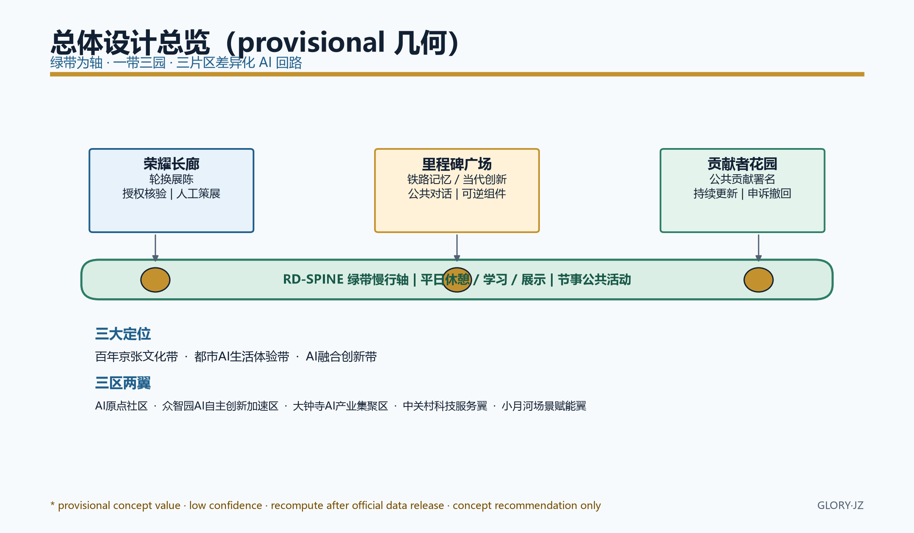
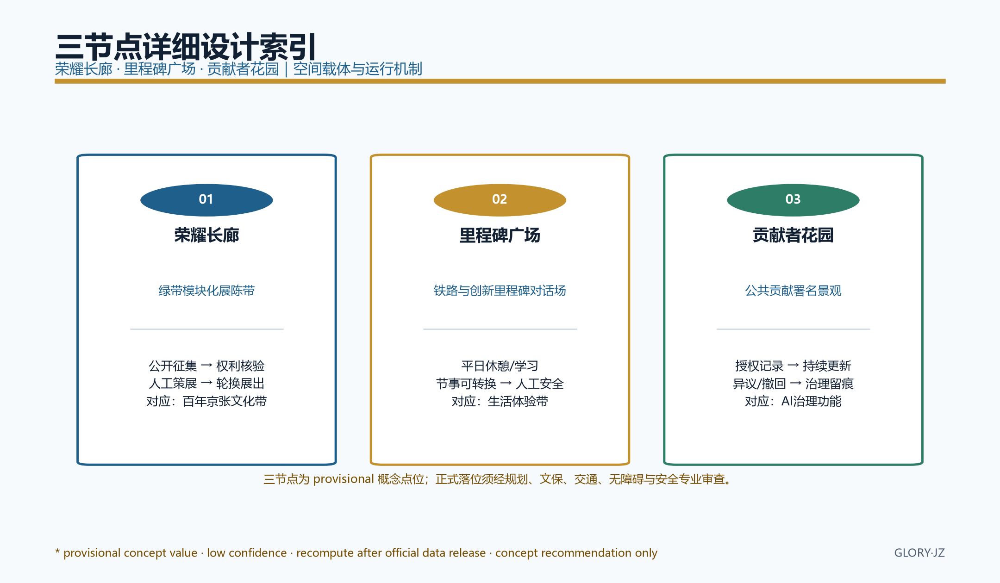
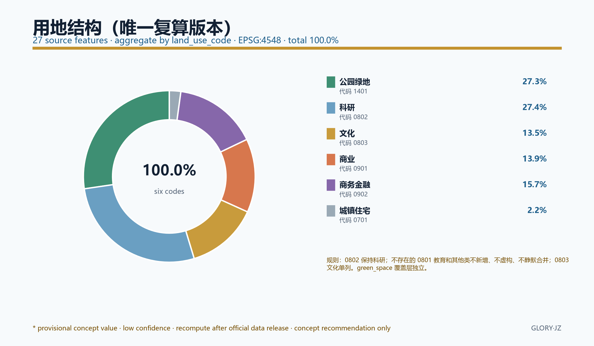
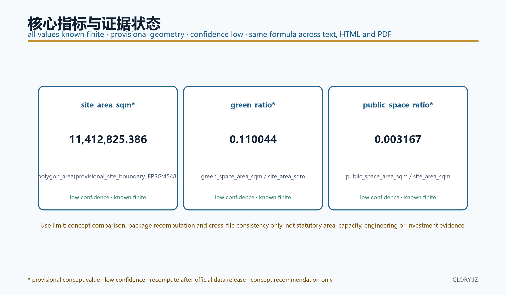
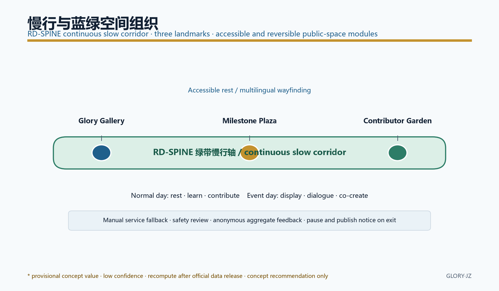

概念与数据边界：本页为概念建议与参考方案。边界、用地和节点几何均为 provisional；数值仅用于包内复算、概念比较和图件一致性，不是法定面积、容量或工程依据。官方数据发布后按相同公式复算。AI仅匿名聚合，关键决策人工复核，禁止过度监控。
交付导航：总览地图 · 三层范围 · 重点区域 · 用地分区 · 交通慢行 · 蓝绿公共空间 · 建筑 · 更新项目 · 任务覆盖 · 自检状态 · 假设
以下标签对应本页图件、几何图层、任务响应矩阵、正式自检与数据边界；所有 provisional 值均保留用途限制。
核心指标（与 metrics.json 同步）
site_area_sqm*11,412,825.386sqm · low confidence · polygon_area(provisional_site_boundary, EPSG:4548)
green_ratio*0.110044green_space_area_sqm / site_area_sqm · low confidence
public_space_ratio*0.003167public_space_area_sqm / site_area_sqm · low confidence
* provisional；结构化值为 known finite geometry-derived values。用途限制、来源和复算触发条件见 compliance_matrix.json。
图件索引





三大定位—五大功能—三区两翼—本方案响应
| 层级/任务项 | 空间载体 | 运行机制 | 场景/指标与证据 |
|---|---|---|---|
| 三大定位：百年京张文化带 | 绿带及三地标 | 征集—权利核验—人工策展—轮换—异议/撤回 | 3 landmarks；3 annual programs；geometry/public_space.geojson |
| 三大定位：都市AI生活体验带 | RD-SPINE、三地标、5场景节点 | 平日/节事切换、双语导视、无障碍点、人工安全服务 | 8 nodes；5 personas；metrics.json:public_space_ratio |
| 三大定位：AI融合创新带 | 众智园、大钟寺、两翼接口 | 三条差异化测试回路，每条有角色、输入输出、闸门、退出 | 3 district loops；3 tests；compliance_matrix.json |
| 五大功能：AI全栈自主创新体系 | KEY-ZHON 众智园 | 算力→数据→模型→评测→部署→治理 | 部署前审查、失败回滚；compliance_matrix.json:district_ai_matrix[0] |
| 五大功能：世界级AI创新生态 | KEY-BEIJ 与中关村科技服务翼 | 公开征集、案例库、知识资产、服务转介 | 4 cases；不承诺企业/资本/政策 |
| 五大功能：AI+场景赋能新范式 | 一带三园与小月河路径 | 匿名输入→可解释辅助→人工复核→公示→撤回 | 3 tests；1 public path |
| 五大功能：智能化AI活力城市 | 慢行轴与可逆组件 | 休憩/学习/展示与节事模式切换 | green_ratio=0.110044*；3 programs |
| 五大功能：AI治理全球话语权 | 贡献者花园治理板、众智园日志 | 公示、申诉、撤回、人工闸门、退出记录 | 五场景均有 review/exit 字段 |
| 三区两翼：AI原点社区 | KEY-BEIJ | 双语、可访问学习与贡献接口 | 5 personas；概念活动 |
| 三区两翼：众智园AI自主创新加速区 | KEY-ZHON | 可逆全栈测试协议 | 六阶段链；人工治理 |
| 三区两翼：大钟寺AI产业集聚区 | KEY-DAZH | 智能原生消费/商务：寻路、时段、服务板 | 运营者和安全员人工核验 |
| 三区两翼：中关村科技服务翼 | 区域服务接口 | 技术支持、知识、权利核验转介 | 不承诺招商、投资或机构参与 |
| 三区两翼：小月河场景赋能翼 | RD-SPINE→场景节点→三地标 | 选路→体验→协助→反馈→公示 | 1 path；8 nodes；非数字替代 |
片区差异化 AI 场景
| 片区 | 空间与主体 | 输入→输出 | 复核与退出 |
|---|---|---|---|
| 众智园 | KEY-ZHON；数据管理员、模型负责人、评测员、治理审查员 | 许可模型卡、匿名聚合测试请求、基准任务→版本化结果卡、评测日志、部署决定 | 数据用途/质量/偏差/治理三级审查；阈值失败、撤回、投诉或测试结束即停端点并回滚 |
| 大钟寺 | KEY-DAZH；店铺/办公运营者、访客、片区安全员 | 自愿匿名请求、公开营业信息、人工寻路观察、节事通知→双语寻路卡、建议时段、服务板 | 运营核文字、片区核安全/可达性；隐私投诉、拥挤、无障碍故障或过期即回到人工公告 |
| 小月河场景赋能翼 | RD-SPINE→节点→三地标；居民家庭、学生、访客、志愿者、联络员 | 自愿匿名反馈、无障碍需求、人工计数、已公示路径/活动→双语路线卡、休憩点建议、散场提示 | 联络员核包容性、安全负责人核路况；投诉阈值、路况变化或活动结束即暂停并发布人工通知 |
用地复算（唯一版本）
| 代码 | 中文 | 要素 | 面积 sqm | 占比 |
|---|---|---|---|---|
| 1401 | 公园绿地 | 5 | 3,116,095.041 | 27.3% |
| 0802 | 科研 | 4 | 3,125,404.414 | 27.4% |
| 0803 | 文化 | 3 | 1,545,510.440 | 13.5% |
| 0901 | 商业 | 4 | 1,583,428.401 | 13.9% |
| 0902 | 商务金融 | 6 | 1,796,422.322 | 15.7% |
| 0701 | 城镇住宅 | 5 | 245,964.767 | 2.2% |
| 合计 | — | 27 | 11,412,825.386 | 100.0% |
教育科研/科研/其他规则：0802 保持科研单列；本层没有 0801 教育或其他类，不新增、不虚构、不静默合并；0803 文化单列。green_space.geojson 是独立绿地覆盖层，不与 1401 相加。